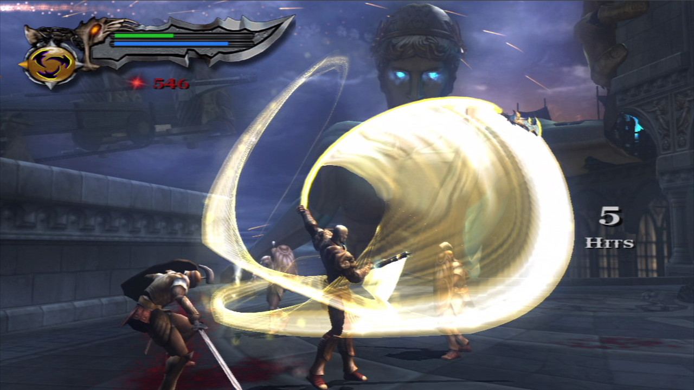
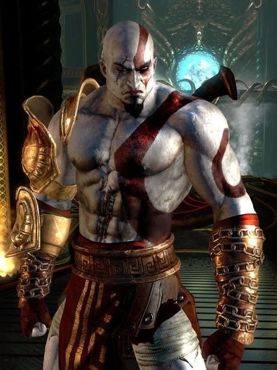
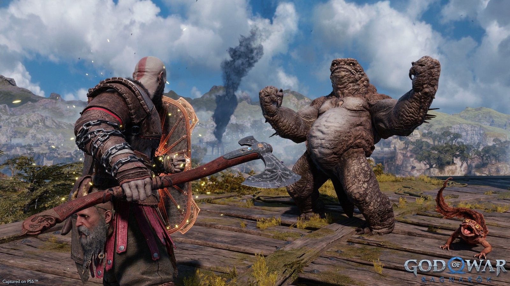

*Kratos adalah tokoh fiksi protagonis dalam seri permainan video God of War. Kratos adalah petualang yang mencari balas dendam atas pengkhianatan para Dewa Olympus. Berikut adalah beberapa hal yang berkaitan dengan sejarah Kratos: Kratos adalah karakter asli yang diciptakan untuk God of War. Kratos tidak didasarkan pada dewa tertentu dari mitologi Yunani atau Nordik. Dalam God of War (2005), Kratos telah melayani para dewa selama sepuluh tahun. Kratos merasa lelah dan tertekan dengan pelayanannya. Kratos menghadapi Athena, pelindungnya, yang menasihatinya untuk membunuh Ares yang mengamuk. Kratos setuju dengan motif egoisnya. Setelah menemukan dan menggunakan Kotak Pandora, Kratos berhasil membunuh Ares. Kratos terbebas dari pengaruh Ares, tetapi tidak terbebas dari mimpi buruknya. Kratos mencoba bunuh diri, tetapi diselamatkan oleh Athena. Athena membimbing Kratos ke Olympus dan menganugerahinya Blades of Athena. Kratos menjadi Dewa Perang yang baru. Dalam God of War (2018), Kratos melakukan perjalanan ke Midgard dan bertemu dengan dewa-dewa Nordik.
Kratos adalah karakter utama dari seri *God of War*. Ia adalah seorang prajurit Spartan yang berupaya membalas dendam kepada para dewa setelah dihianati oleh mereka. Kisahnya penuh dengan tragedi, pengkhianatan, dan pembalasan dendam.
Seiring berjalannya waktu, *God of War* berkembang tidak hanya dari segi grafis, tetapi juga gameplay, narasi, dan dunia yang lebih luas. Seri terbaru, yang dirilis pada 2018, memperkenalkan perubahan gaya permainan serta lokasi baru di dunia mitologi Nordik.
